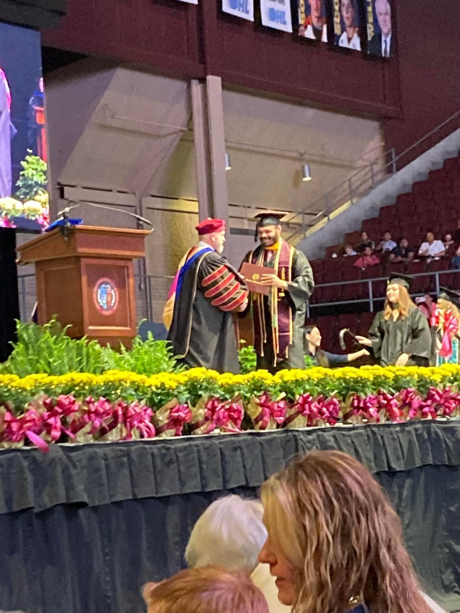
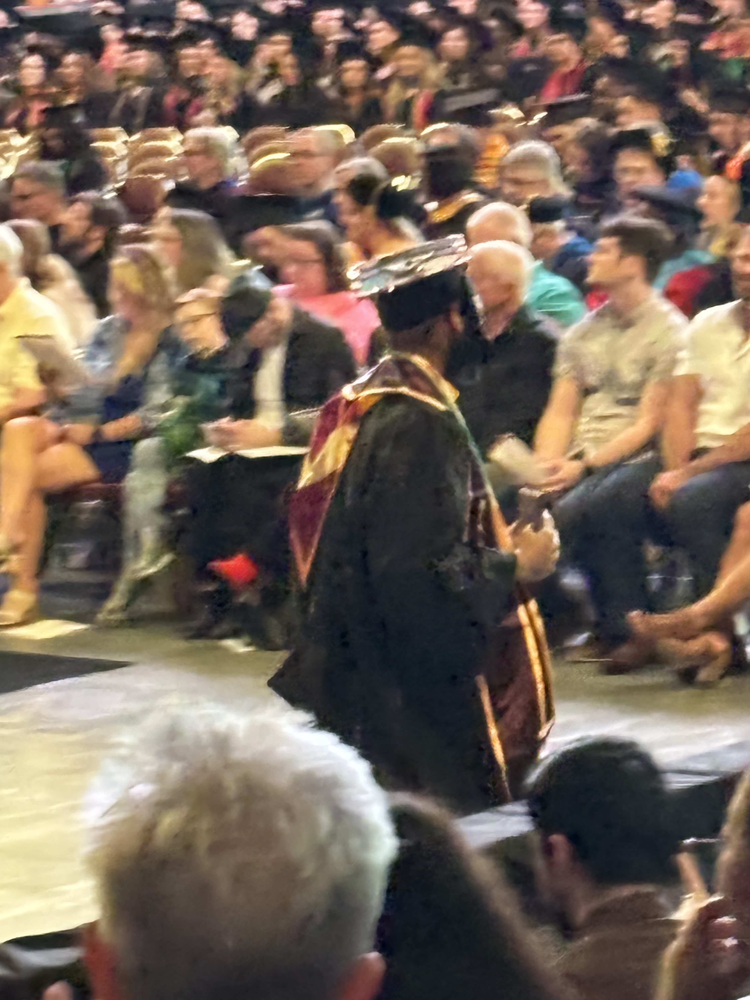
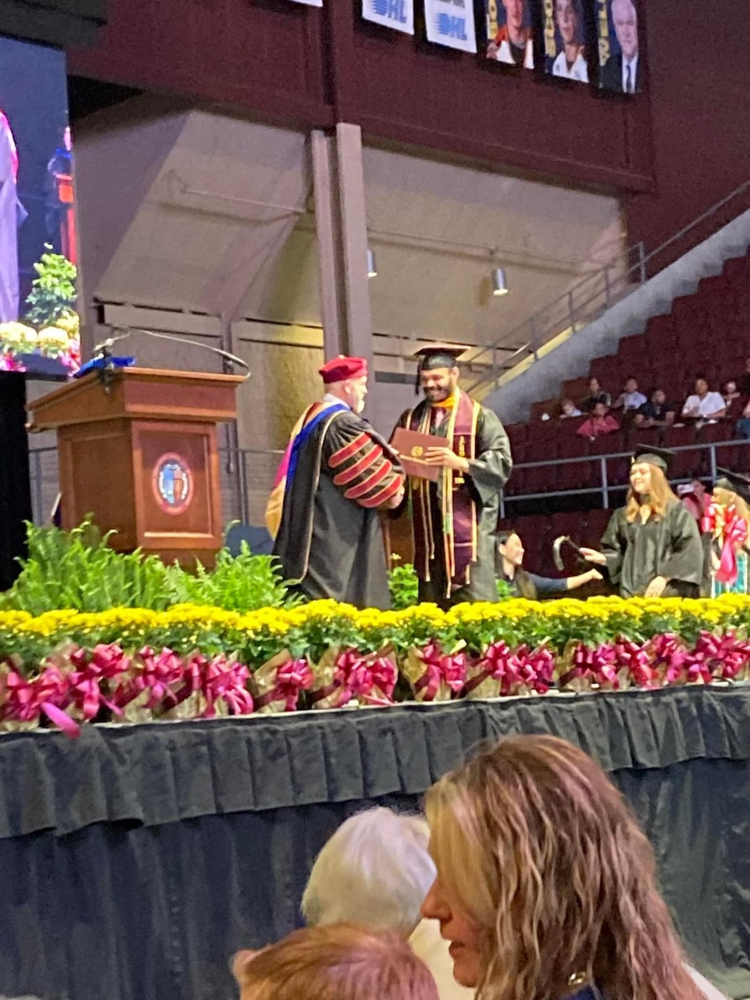
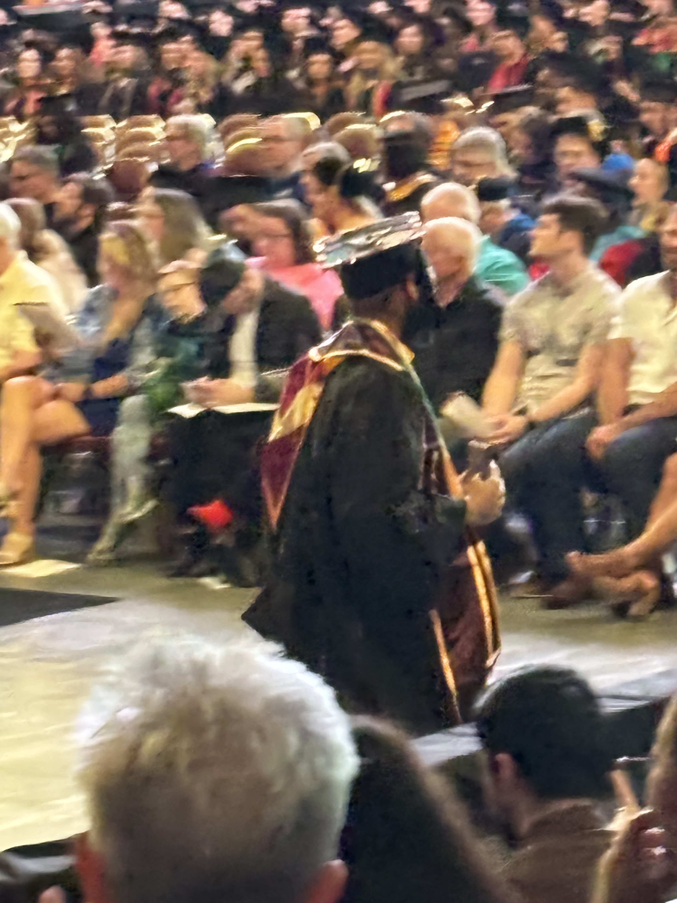
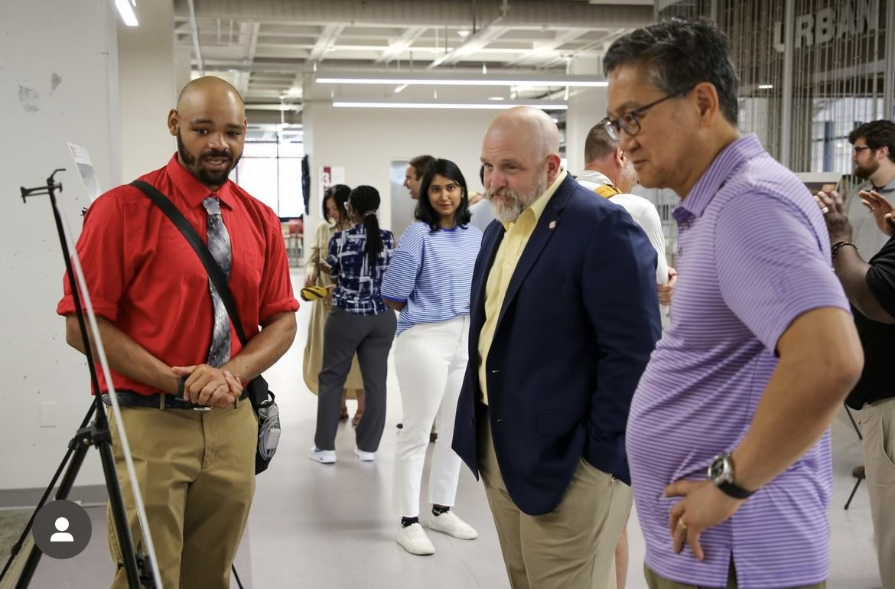
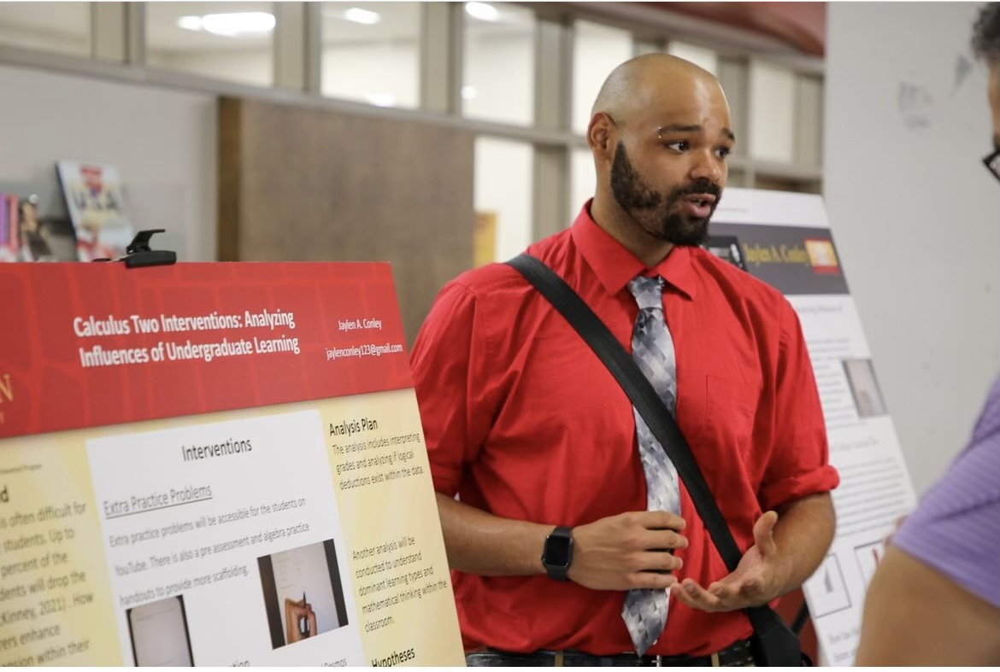
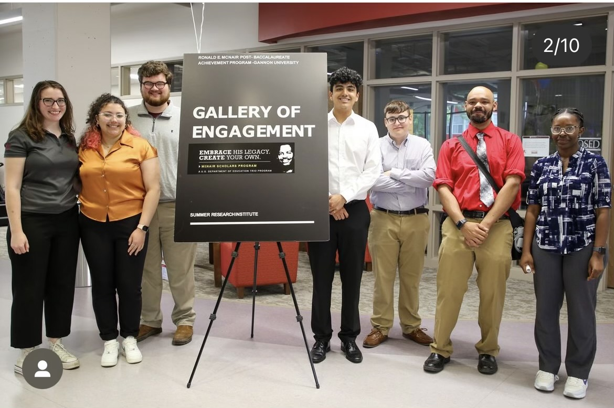
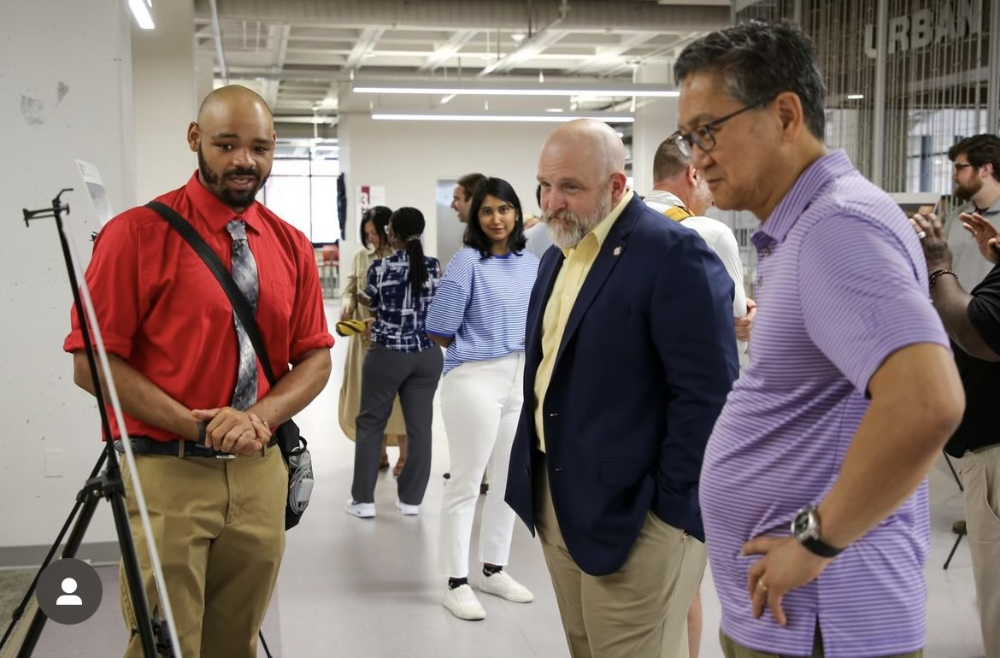
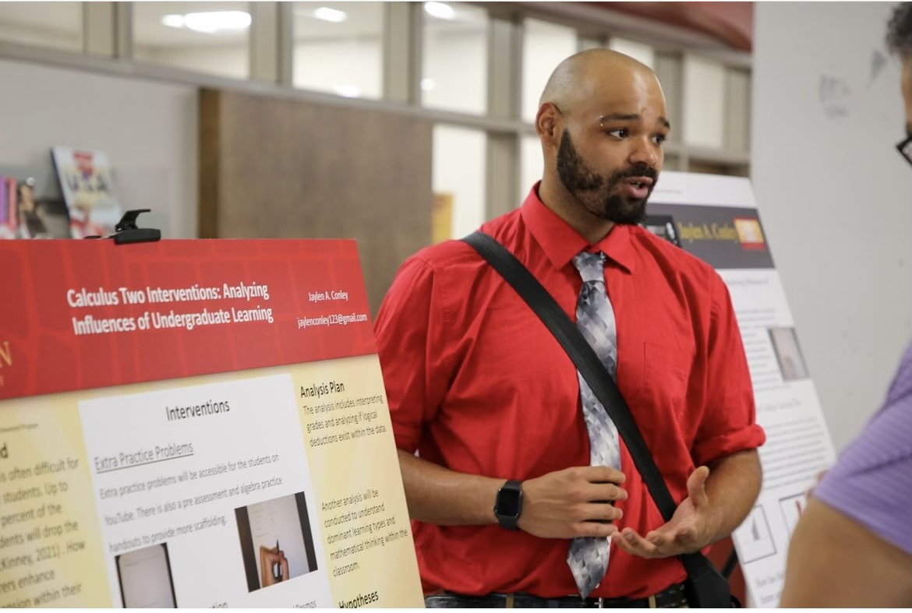
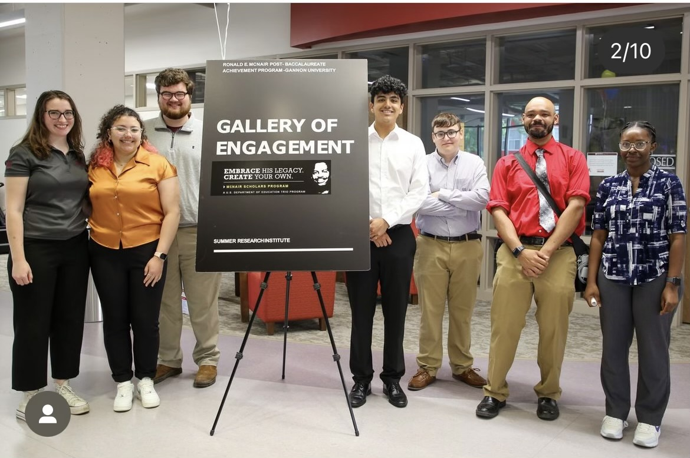

Achiever
Connectedness
Futuristic
Strategic
Ideation
Field Experiences
Cathedral Prepatory
East Middle School
Saint Judes School
Erie Day School
Pfeiffer-Burleigh
Northwest PA Collegiate Academy
Experience
Constructivism
Essentialism
Behaviorism
Perennialism
Existentialism
Linguistic Philosophy
Progressivism
Work Experience
SSS Tutor Coordinator and Peer Mentor / Gannon University
Aug 2022 - May 2024
STEM Tutor / Gannon University
Aug 2022 - May 2024
Non Instructional Substitute / Erie School District
Jun 2022 - Jul 2022
Philosophies
Philosophy of Assessment
Updated May 2024

Philosophy of Education
Updated May 2024


Philosophy of Inclusive Education
Updated May 2024

 





Mathematics Teacher
Erie, PA
jconley@eriesd.org
School: Extension:
East Middle School, Room 208
Teaching Experiences
7th Grade
8th Grade
Algebra 1
Geometry
Algebra 2
Trigonometry
Calculus
Higher Level Mathematics
Areas of Interest
Programming and Coding
Mathematics
Physics and Engineering
Field Experience
Northwest Pennsylvania Collegiate Academy
Jan 2024 - May 2024
Pfeiffer-Burleigh Elementary School & Erie Day School
Sept 2022 - May 2023
Cathedral Prep High School & Saint Jude’s School
Jan 2021 - May 2022
References
Aug 2020 - May 2024


Field Placement Artifacts
Opener and Exit Slip - Algebra 1
Aug 2022 - May 2024
President from August 2022 to May 2022. Provided detailed ideas about potential events of fundraisers to promote the club, devised a financial budget appropriate for the fundraiser and event, and promoted the fundraiser or event with approval from the Coordinator of Event Scheduling.

Technology Activity - Algebra 2
Aug 2020 - May 2024


Test and Quiz Sample -
May 2022 - May 2024
Section 7.1 to 7.2 quiz was used in a classroom.

Geometry summative assessment was not used in a classroom yet.


Lesson Plan Sample - Trigonometry Activity
Fall 2020 - Spring 2021 - Spring 2024
Section 5.2 lesson activity was used in a classroom.


Adapted Lesson Plan - ELL Strategies
Fall 2020 - Spring 2021 - Spring 2024


Adapted Lesson Plan - LD Strategies
Fall 2020 - Spring 2021 - Spring 2024


Module Framework Sample - Algebra 1
Fall 2020 - Spring 2021 - Spring 2024


Questioning Template Sample
Fall 2020 - Spring 2021 - Spring 2024


Certifications and Qualifications
Gannon University
August 2020 - May 2024
Completed B.S. Mathematics & Secondary Education

Charter School of Excellence: Skills Center
August 2014 - June 2018
Completed General Educational Studies (Diploma)

Praxis Test: Mathematics (5165)
Completed March 2024


Mandated Reporter Certification
Completed August 2021

Youth Mental Health Certification
Completed January 2024

Diocese Policy for the Protection of Children
Completed August 2021

Clearances
Updated September 2023
Act 33 ( Child Abuse Clearance )

Act 34 ( Criminal Check )


FBI Fingerprint Check


Act 24 ( Arrest/Conviction Report )


TB Test Results


Emergency Contact Information